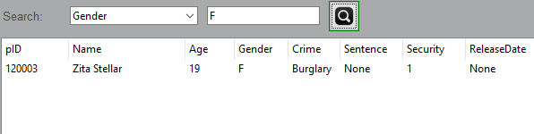
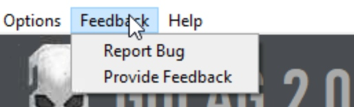
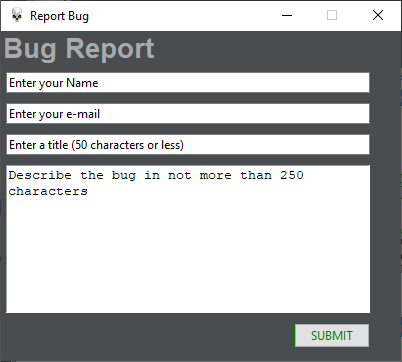

DOCUMENTATION
Demo Video
The GULAG Database
Getting Started
On starting the application, you should see a window looking like the image below
Connecting
On the top left corner of the window, you will see a menubar like this:
To get started, first we will connect the application to a MySQL server.GulagPy was a prison database management project so for GULAG 2.0 we have provided a sample database to be used by the user for testing out the app. To connect to it first we will click on the 'Options' tab in the menubar and click on 'Connect' from the dropdown
On clicking on 'Connect' a window like this will pop up:
As you can see the form for the connection has already been partly filled. All you have to do is modify the Username to : < aarav_guestuser >. That is the guest account that we have provided to you so that you can test out our app. This guest user has only limited permissions to protext the database from mischeivous hands. To speak plainly all you can do is Add Records to a table and Update records pre-existing in the table and can not commit the changes you have made. To gain access to the root user you can contact us (More on that later)
The password to be entered is : < gulagGUEST123 >
Upon successfully connecting, a message box will popup stating that you have successfully connected to the server :
Databases & Tables
Now the 'Database' section in our main app will get refreshed and will display the available databases :
The information_schema database is a system database and will not be of any use other than just viewing the records out of curiosity
To continue, we will double click on the aarav_db database which is our sample database.
On double clicking, a message box will pop up stating that we have selected the database and all our further actions will be performed on it
Now, our 'Tables' section will get updated with the tables provided in the selected database. Currently, at the time of writing this documentation, our database has only one table: 'prisoners'. However, you will be able to see two more: 'employees' and 'visitors'.
Records
On double clicking the 'prisoners' table, the 'Records' section will get updated and display all the records entered:
Again, currently it has only 3 records but more will be added.
On top of the records are the names of the column. You can change the display width of each column by dragging the column dividers like so:
Querying Records
You might have noticed this tab on top of the records table. You can use this tab to search the records by any single column (currently) as shown:

Adding Records
On the right side of the application you will find a DML commands panel like this:
On clicking the 'ADD RECORD' button, the main window will get withdrawn and a new window with the fields to be entered will pop up like so:

Fill out the given form carefully because the program isn't currently capable of deecting and fixing user errors. If any error occurs, the operation will be cancelled and the exact error will be diplayed so you may try to fix it manually.
Updating Records
To update a pre-existing record, first you need to select the record from the table and then click on the 'UPDATE RECORD' button. Just like when you add a record, a new window will pop up and the main app will get withdrawn.
The same fields will appear only filled with the pre existing information. You can modify them as you will and click on the UPDATE button.
Help Menu
On the top menu bar, you might have noticed a 'Help' tab. On clicking it, a dropdown appears like so: Clicking on 'GULAG Docs' a new browser window will open up with this webpage.
Clicking on 'Join help server' will take you to the invite link to out Discord server where you can get help from the developers. Also we are open to any doubts for python and are willing to help you out on any project you may be working on.
Requesting root access
To gain more privileges and access to our MySQL server, you can click on the 'Request database root' option in the 'Help' menu. This will pop up a new window with a form like so: Fill out the given form and hit submit. We will recieve your request and judge wether we should give you the access or not.
Feedback & Bug Reports
In the menubar there is a feedback tab given clicking on it opens the following dropdown: To report any bug that you may have encountered in our app, please click on the Report Bug option. It will pop up a new window like so: Fill out this form and hit submit button. We will recieve the report and work it out and send revert to the provided email on the status of the report.
To give feedback to our app or to give us suggestions, please use the Provide feedback option in the Feedback menu. It will open a new window like so: Fill out the form and hit on submit button. We will recieve your feedback/suggestion.
The Developer Console
For more advanced SQL commands, we have provided a developer console which can not display outputs (currently) but displays and highlights any error or reverts with a success message.
To enable the console, go to the options tab and click on the 'Developer Console' optionThis will open a new window like so: Use the input command to enter MySQL commands.
End
Furthermore
You might have noticed that we have skipped a lot of the available commands in the above documentation. That was simply done because we were using the guest account on 'OUR' MySQL server and as stated earlier it has only limited privileges. Now we will use the 'localhost' or the local MySQL server running on your own machines and demonstrate these left-out functions or you can request the access to root priveleges on the gulag database
Creating Database
After connecting on a localhost, the Databases section will get refreshed and display the available databases: Clicking on the CREATE button a new window will pop up like so: Give your new database a name and hit on create.A messagebox will pop up stating that the database was created successfullyThe Database section in our main app will get refreshed and now display our newly created database too
Dropping Database
You can drop a database by selecting it in the Database section and clicking the drop button.A confirmation messagebox will pop up. Click on Yes to delete the database. A messagebox will popup confirming the successfull deletion of the database.The database section will get refreshed.
Creating Tables
This is the most complicated part of the entire program and maybe you will encounter some bugs in this. Therefore extreme caution is required to use this module
After selecting a database to work with we will click on the CREATE button in the Tables sectionA warning will be given and you should really abide by it.Now the main app will get withdrawn and a new window will pop up like so:In the top right hand corner, enter the name of the table.Now, every table in MySQL needs atleast one column so we will go ahead and do that by clicking the Add Column button. It will again trigger the same warning and then open a new window and withdraw the previous one.Enter the column name, select it's datatype, select if it can be null or not and give it a default value(optional).
NOTE:
If you select Integer,Char or Varchar, the program will ask you to give size of the column. DO NOT leave this blank. This is one of the bug that is currently known and will be worked on soon.If you select the decimal datatype, you will be asked to provide the total number of digits and the position of the decimal point.
After filling out the column details, you can click on the ADD button and the column details will be stored to be used when you give the command to create the table.
If per chance you realize that you have accidentally added a column or have given wrong specification for the column, you can select the column and click on the delete column button and add again.
After you have finished adding columns you can click on Create Table button. This will open a popup window asking you to provide a primary key. Select the column which you want to be the primary key and click ok and if all goes well you will see: 
Deleting Records
If you want to delete a record from the table, select the record and click on the DELETE RECORD button.The program will ask a confirmation. Click yes to delete the record.
Committing Changes
If you want to commit the changes made to the database, click on the commit button.Click Yes
Deleting Tables
If you want to delete a table, select the table and click on the delete button in the Tables section.Click Yes
Truncating Tables
If you want to truncate a table, select the table and click on the TRUNCATE button in the Tables section.Click Yes